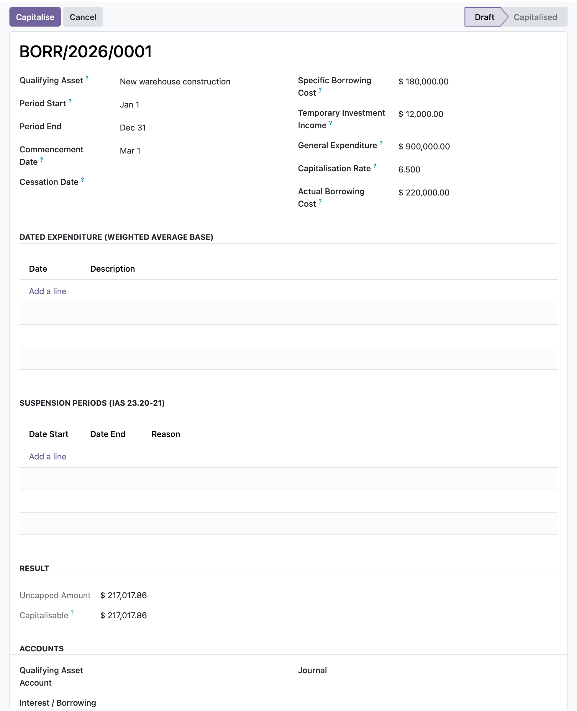

Capitalise the borrowing costs directly attributable to a qualifying asset, specific borrowings net of temporary investment income plus general borrowings at the capitalisation rate, capped at costs actually incurred, and reclassify them from interest expense to the asset in one balanced, sealed entry.
The capitalisable amount is specific borrowing cost less temporary investment income, plus general expenditure times the capitalisation rate, then capped at the borrowing costs actually incurred. Investment income floors the specific tranche at zero so it can never subsidise the general pool.
Enter dated expenditure lines and each amount is apportioned by the fraction of the period it was outstanding, giving the weighted-average accumulated expenditure the rate is applied to. Leave the lines blank and a single flat expenditure figure is used instead.
Capitalising is restricted to the EH Accounting Manager group and writes a single balanced move that debits the asset account and credits the interest account, marked sealed and stamped on the chatter. Measurement inputs freeze once posted.
You open a borrowing-cost record for the qualifying asset, enter the specific borrowing cost and any temporary investment income, set the capitalisation rate and the general expenditure or dated expenditure lines, and enter the total borrowing costs actually incurred. The result group shows the uncapped and capped capitalisable amounts as you type. If activity was suspended you add a suspension span and the window logic carves those days out. A manager clicks Capitalise, the module posts the balanced reclassification entry from interest to the asset, and the record moves to Capitalised with its inputs frozen so the figure can never drift away from what was posted.
In the shipped code today, each one a place where a cheaper module silently does the wrong thing.
Temporary investment income is netted against the specific borrowing cost only and floored at zero, so an excess of income can reduce the specific tranche to nil but never erode the general-borrowing component.
The capitalised amount is capped at the borrowing costs actually incurred in the period, and the final figure is floored at zero, so it can never exceed real cost or go negative.
Commencement, cessation and suspension dates carve the active window out of the period; expenditure before commencement, after cessation or during a suspension is not capitalised, and the window can only ever reduce the base, never inflate it.
Once a period is capitalised, every measurement input on the record, its dated expenditure lines and its suspension spans are frozen against edit, create, unlink and re-parenting, so a posted entry can never be silently re-measured.
A missing journal or account, a non-draft state, or a nil capitalisable amount each raise an explicit error rather than posting nothing or a wrong figure.
odoo 19 borrowing costs, IAS 23 odoo, interest capitalisation odoo, capitalisation rate, qualifying asset, directly attributable borrowing cost, specific and general borrowings, temporary investment income, weighted average expenditure, borrowing cost capitalisation, reclassify interest to asset, odoo 19 community accounting

Borrowing costs eligible for capitalisationAn IAS 23 computation that nets specific borrowing costs of temporary investment income and applies the capitalisation rate to general expenditure, capped at the actual borrowing cost.
Premium ERP Heritage modules that extend the same stack, each built to the same engineering bar.
A reusable two way synchronisation engine that keeps Odoo in step with the people and payroll platform, idempoten...
The Australia country pack for the ERP Heritage Employment Hero integration
Sync certifications, qualifications and employee document metadata from the Employment Hero people platform into...